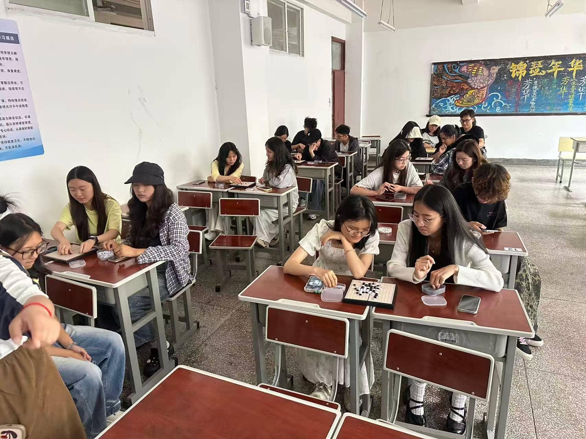
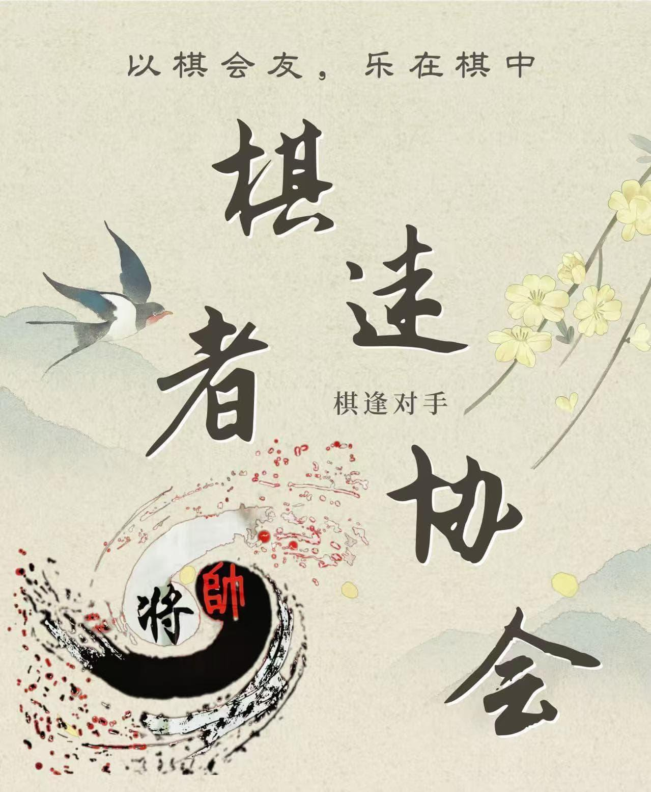
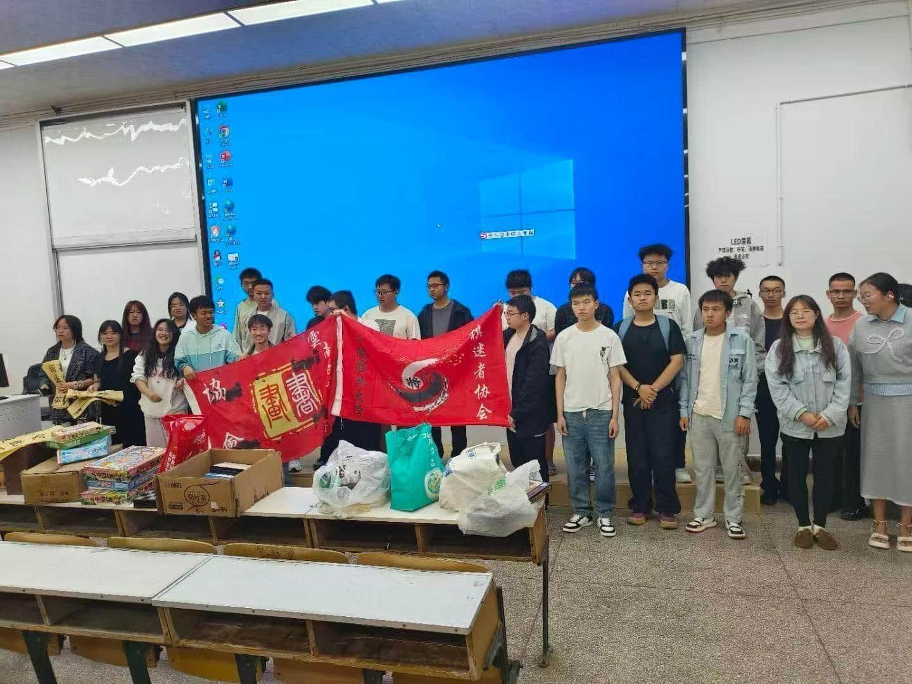
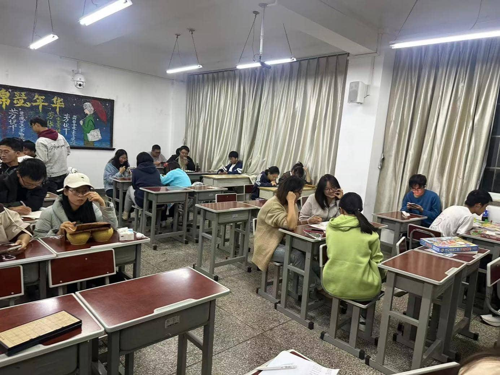
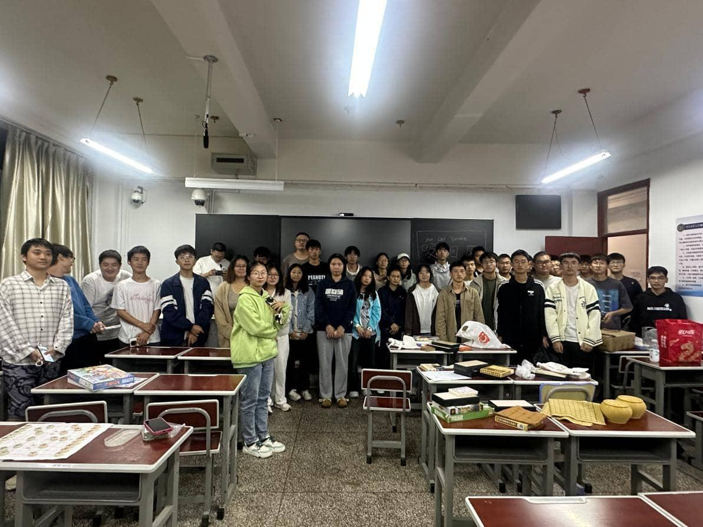

2026年4月26日 · 厚德楼1-8、1-9
第四届耕读文化节棋类比赛
为了构建健康、文明的校园文化氛围，营造健康竞技的校园环境，搭建各社团同学之间互相交流学习的平台，增进各兄弟社团之间的友谊，调动社团人员参加文体活动的积极性，增强各社团凝聚力，展示出新时代大学生的蓬勃朝气和竞技热情。在云南农业大学第四届耕读文化节到来之际，在云南农业大学校团委的指导以及校园文化活动指导中心的协助下，棋迷者协会特举办此次“耕读杯”象棋围棋五子棋大赛。

小棋盘上运筹帷幄，青春校园里以棋相识。
第一局 · 社团简介
本社团棋迷者协会成立于2011年11月，以“以棋会友，乐在棋中”为宗旨，长期开展象棋、围棋、军棋、五子棋、跳棋等多类棋类交流、对弈赛事活动。
近年来，社团围绕棋艺普及、思维锻炼不断推进品牌建设，形成了覆盖多棋种、兼顾休闲与益智的特色活动体系。
未来，社团将继续丰富棋类活动形式，持续通过棋类运动提升学生逻辑思维能力，助力同学们综合素养全面发展。
第二局 · 部门组成
从棋艺教学到赛事执行，五个部门共同支撑每一场对弈与交流。
01
精通各类棋类规则与对弈技巧，开展棋艺教学、赛事裁判工作，为活动提供专业棋艺技术支撑。
02
策划、筹备各类棋赛与交流活动，设计活动流程，统筹现场执行，保障棋类活动有序落地开展。
03
对接校内其他社团、校外棋类组织，洽谈活动合作与物资赞助，搭建对外交流联动渠道。
04
负责社团活动海报、推文、摄影记录，运营社交宣传平台，对外展示棋类活动风采，扩大社团影响力。
05
负责社团考勤、纪律监督，规范成员参会与活动出勤，核查部门工作落实情况，维护社团公平有序的管理秩序。
第三局 · 精彩瞬间
棋子起落，是专注的安静，也是相识后的热闹。
第四局 · 精彩活动
从交流会到校园赛事，协会让不同棋种、不同水平的同学都能找到自己的一局。

2026年4月26日 · 厚德楼1-8、1-9
为了构建健康、文明的校园文化氛围，营造健康竞技的校园环境，搭建各社团同学之间互相交流学习的平台，增进各兄弟社团之间的友谊，调动社团人员参加文体活动的积极性，增强各社团凝聚力，展示出新时代大学生的蓬勃朝气和竞技热情。在云南农业大学第四届耕读文化节到来之际，在云南农业大学校团委的指导以及校园文化活动指导中心的协助下，棋迷者协会特举办此次“耕读杯”象棋围棋五子棋大赛。

2025年9月15日 · 厚德楼3-10
为了活跃校园气氛，发扬中国的传统棋艺文化，丰富学生的课余生活，培养广大棋艺爱好者对下棋的兴趣，云南农业大学棋迷爱好者协会决定举办棋艺第一次象棋大乱斗活动。该活动能让更多的大学生尝试接触到中国象棋，尝试着对弈。与此同时，通过棋场上的“你争我夺”来增强大学生的竞争意识，通过棋盘上的“举棋无悔”来增强大学生的行为素质，小棋盘上运筹帷幄，大世界中决胜千里。该活动既能丰富棋协成员课余生活，调动大家对各棋类运动的兴趣，让大家在课程之余注重自己的身心健康发展，也为学校营造良好的文化氛围，展现学校文化风采。

2025年9月27日 · 厚德楼1-8、1-9
2025年9月27日，五子棋交流会在厚德楼1-8和1-9成功举办。活动旨在让更多大学生尝试接触对弈，培养竞争意识与行为素质。活动伊始，由会长上台介绍本次交流会的内容，随后由会长王鉴卿为大家分享了宝贵的象棋学习心得。分享结束后，成员们在棋盘上展开激烈角逐，让新老成员以棋会友，相互切磋，共同提高。
2025年10月19日 · 厚德楼1-8、1-9
2025年10月19日，为让更多的大学生尝试接触到中国象棋并尝试对弈，协会举办了首次象棋交流会。活动开始时由会长介绍交流会内容，随后由会长王鉴卿倾情分享象棋学习心得。分享完成后，组织大家全神贯注地进行下棋切磋，相识棋盘，进一步弘扬了中华传统棋类文化。

2025年12月14日 · 厚德楼1-7、1-8、1-9
2025年12月14日，在云南农业大学第四届耕读文化节到来之际，协会在校团委的指导及校园文化活动指导中心的协助下，于厚德楼1-7、1-8、1-9承办了“耕读杯”大赛。比赛设置了象棋、五子棋和围棋三个项目，采用初赛淘汰赛、复赛三局两胜及决赛混战积分制等形式决出名次。活动搭建了各社团同学互相交流学习的平台，展示了新时代大学生的蓬勃朝气和顽强的竞技精神。